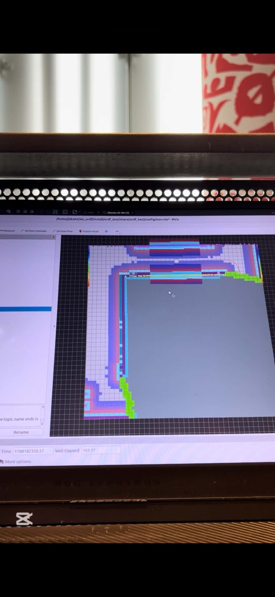
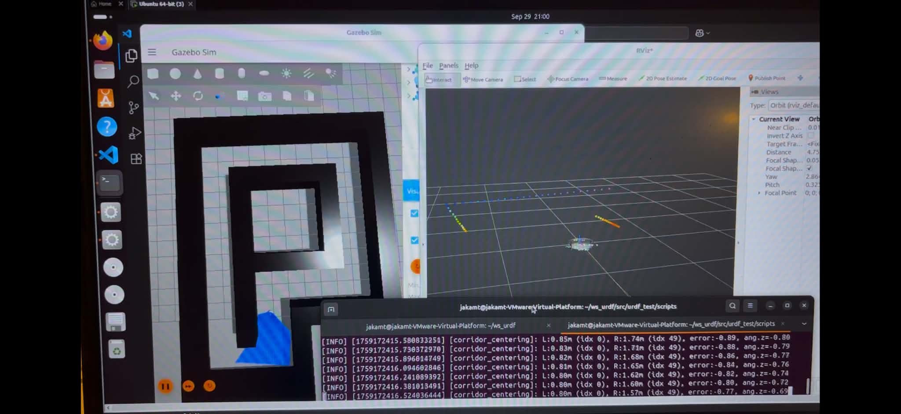

ROS2 - Autonomous wall-following robot
Project and Context
The robot is a simulated differential-drive robot that went from a hand-written model to a fully autonomous explorer. I built it in three stages for a school project, each one building upon the previous. First I described the robot and gave it a LiDAR. Then I wrote my own controller to drive it through a maze. Finally I gave it SLAM and Nav2, so it could map an unknown maze and explore it without any help from me.
Demo Video
Stage 1: Building a modular robot with Xacro
I rewrote the robot model in Xacro. Shared values like wheel size, mass and offsets are defined once, and one macro builds both wheels. The robot is split into separate files for the body, the physics, the drive plugin and the LiDAR. A differential drive plugin turns /cmd_vel commands into wheel motion. A front-facing 2D LiDAR scans 180° and publishes to /scan.
Stage 2: Writing a controller to follow walls
I wanted the robot to get through a maze using only my own code. My first wall-follower looked straight out to the sides (±90°). It saw corners too late and crashed. The fix was to have it look 60° to each side, slightly ahead, so it sees corners coming. With that change, a simple P-controller was enough. It steers to keep the left and right wall distances equal. After tuning, the robot got through the maze in about 53 seconds. I also made the controller work with any LiDAR setup. It calculates the ±60° beams from the scan's own angle data instead of using hard-coded indices:
idx_right = int(round(( wanted_angle_rad - angle_min) / angle_increment))
idx_left = int(round((-wanted_angle_rad - angle_min) / angle_increment))Stage 3: SLAM and autonomous exploration
- SLAM Toolbox builds a map of the maze while tracking where the robot is in it.
- Nav2 plans safe paths to goals on that map.
- I increased the wall safety margin from 0.5 m to 0.7 m for the narrow corridors.
- Frontier exploration sends the robot to the edge of unexplored space, again and again, until the whole maze is mapped. Then it drives back to where it started.
Takeaways from the project
The project showed me the difference between reactive control and planned navigation. My P-controller was fast and simple, and tuning it taught me a lot about how sensor placement and gains shape a robot's behaviour. But it only reacts to what it sees right now. SLAM and Nav2 let the robot remember, plan and explore, which is what an actual maze needs. Building the low-level controller myself first made the higher-level tools much easier to understand once I got to them. Also, this was the first time working with ROS2 and made me alot more confident with using linux as that was somewhat new for me at the time.
Gallery

